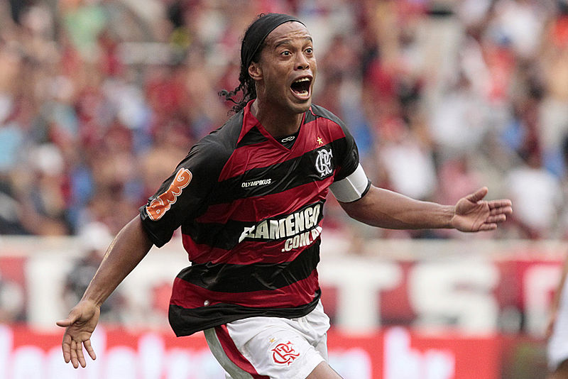
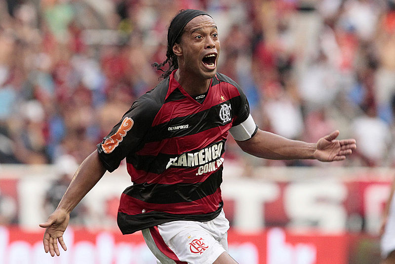

Ronaldinho"

Ronaldo de Assis Moreira (born 21 March 1980), commonly known as Ronaldinho, is a Brazilian professional footballer and current club ambassador for Spanish club FC Barcelona after signing for them in September 2016.

Ronaldo de Assis Moreira (born 21 March 1980), commonly known as Ronaldinho, is a Brazilian professional footballer and current club ambassador for Spanish club FC Barcelona after signing for them in September 2016.
Kumar Sangakkara

Kumar Sanga Chokshanada Sangakkara is a former Sri Lankan cricketer and captain of the Sri Lankan national team. Widely regarded as one of the world's most influential cricketers,Sangakkara rated as the second greatest ODI batsman of all time in a recent public poll.
Kumar Sanga Chokshanada Sangakkara is a former Sri Lankan cricketer and captain of the Sri Lankan national team. Widely regarded as one of the world's most influential cricketers,Sangakkara rated as the second greatest ODI batsman of all time in a recent public poll.
Cristiano Ronaldo

Cristiano Ronaldo dos Santos Aveiro, ComM, GOIH born 5 February 1985) is a Portuguese professional footballer who plays for Spanish club Real Madrid and the Portugal national team.
Cristiano Ronaldo dos Santos Aveiro, ComM, GOIH born 5 February 1985) is a Portuguese professional footballer who plays for Spanish club Real Madrid and the Portugal national team.